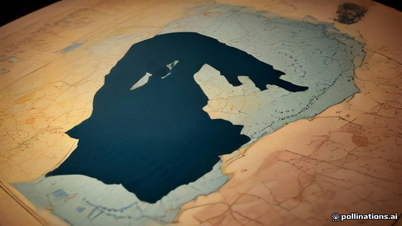

ট্রাম্প দাবি, ইউরোপে রাশিয়ার সামরিক আগ্রাসন থামাতে পুতিনকে আহ্বান
France 24, DW · 2026-11-27
AI-generated illustrationমার্কিন প্রেসিডেন্ট ডোনাল্ড ট্রাম্প বলছেন, রাশিয়ার প্রেসিডেন্ট ভ্লাদিমির পুতিনকে ইউরোপে সামরিক আগ্রাসন প্রত্যাহার করতে অনুরোধ করেছেন, যাতে রাশিয়া-ইউক্রেন শান্তি চুক্তি সম্ভব হয়।
মার্চের বৃহস্পতিবার মার্কিন প্রেসিডেন্ট ডোনাল্ড ট্রাম্প জানিয়েছেন, তিনি রাশিয়ার প্রেসিডেন্ট ভ্লাদিমির পুতিনকে ইউরোপের বিভিন্ন ভূখণ্ডে সামরিক আগ্রাসন প্রত্যাহার করার জন্য আহ্বান জানিয়েছেন। তিনি অতিরিক্ত কোনো বিশদ দেননি, তবে তিনি আশা প্রকাশ করেছেন যে এই আহ্বান কিয়েভ ও মস্কোর মধ্যে একটি শান্তি চুক্তির পথ খুলে দেবে।
DW প্রতিবেদনে ট্রাম্পের দাবি উল্লেখ করা হয়েছে যে তিনি পুতিনের সঙ্গে রাশিয়ার ইউরোপে সামরিক আগ্রাসন শেষ করার বিষয়ে আলোচনা করেছেন এবং রাশিয়া ও ইউক্রেনের মধ্যে একটি চুক্তি সম্ভব হবে বলে আত্মবিশ্বাস প্রকাশ করেছেন, যা শিগগিরই বাস্তবায়িত হতে পারে।
Written by AI from facts reported by the outlets named above. It may contain errors; check the original reporting.English version
Trump says he urged Putin to halt military aggression across Europe
US President Donald Trump said on Thursday that he had urged Russian President Vladimir Putin to pull back all military aggression against territories throughout Europe. He did not give further details but said he hoped the appeal would open the path to a peace deal between Kyiv and Moscow.
DW reported that Trump claimed the conversation with Putin focused on ending Russia's military aggression in Europe and expressed confidence that a deal between Russia and Ukraine could be reached in the near future.